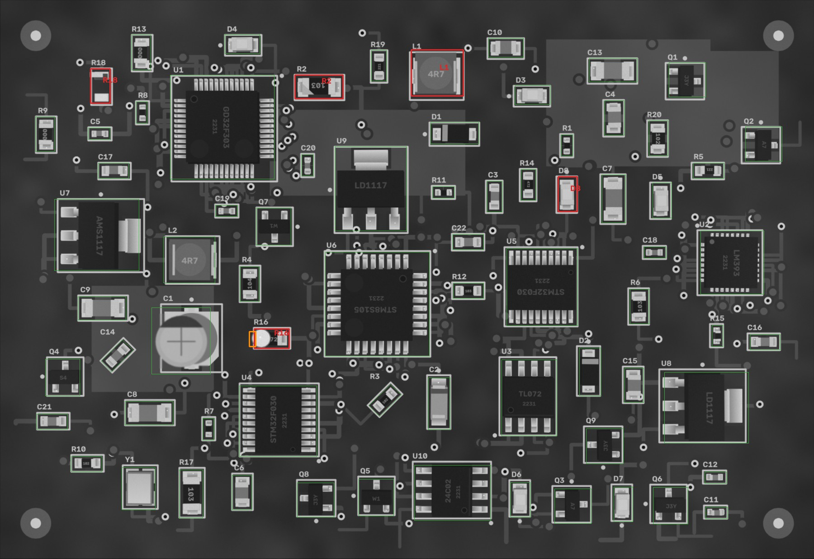
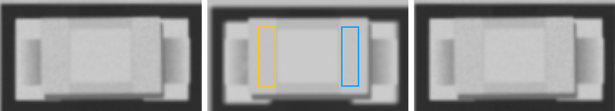
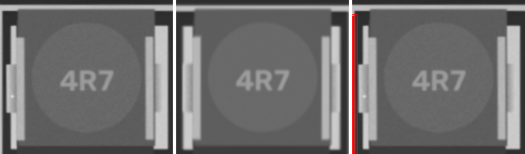
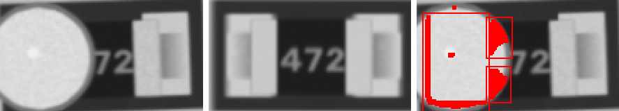
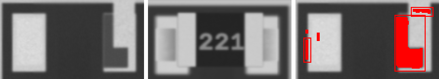
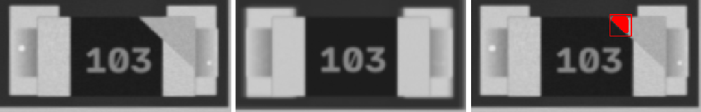
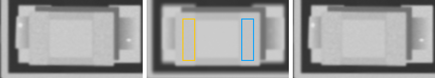
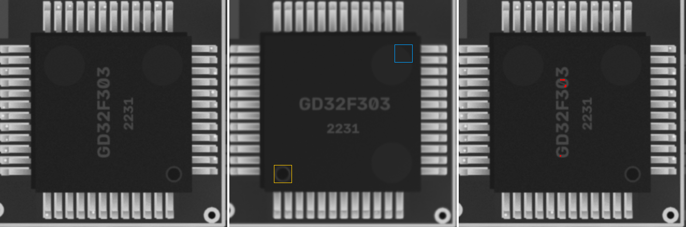
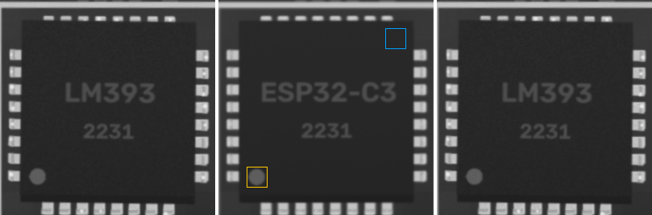

FAIL
2026-10-07 09:34:31 · позиций 72 · FAIL 5 · аномалий вне деталей 1 · невязка фидуциалов 0.0481633610568446 мм · ECC 0.9931

Кроп: живая плата (выровнена) | эталон (жёлтое — метка полярности,
синее — место метки при 180°) | карта отклонений σ.
MISSING — корпус не найден; MISMATCH — на месте не то, что в эталоне (голые площадки, другая деталь,
повреждение); POLARITY — развёрнута на 180° / метка не там; SHIFT / ROTATED — вне допуска;
ANOMALY — локальное отклонение от golden (мост, шарик, лишний припой, посторонний предмет).
| D8 LED_0805 · LED_0805 | FAIL POLARITY |  ncc 0.983 · ncc_thr 0.6 · ncc_180 0.854 · mad 2.0 · mad_thr 7.3 · mad_180 3.2 · mark_ncc -0.089 · mark_ncc_180 0.122 · dx_mm 0.047 · dy_mm 0.047 · dtheta_deg -0.0 · anomaly_px 0 |
| L1 4u7 · L_4x4 | FAIL ANOMALY |  ncc 0.991 · ncc_thr 0.6 · mad 1.5 · mad_thr 7.4 · dx_mm -0.116 · dy_mm 0.023 · dtheta_deg -0.0 · anomaly_px 528 |
| R16 4k7 · 0805 | FAIL MISMATCH |  ncc 0.724 · ncc_thr 0.6 · mad 45.1 · mad_thr 14.2 · dx_mm 0.047 · dy_mm -0.023 · dtheta_deg -2 · anomaly_px 893 |
| R18 220 · 0805 | FAIL MISMATCH |  ncc 0.677 · ncc_thr 0.6 · mad 41.5 · mad_thr 8.8 · dx_mm -0.116 · dy_mm 0.07 · dtheta_deg -0.0 · anomaly_px 1054 |
| R2 10k · 1206 | FAIL ANOMALY |  ncc 0.961 · ncc_thr 0.6 · mad 8.6 · mad_thr 8.9 · dx_mm 0.023 · dy_mm 0.047 · dtheta_deg -0.0 · anomaly_px 153 |
| C1 100u · CP_Elec_5x5.8 | PASS | ncc 0.996 · ncc_thr 0.6 · ncc_180 0.514 · mad 2.3 · mad_thr 7.9 · mad_180 27.7 · mark_ncc 0.995 · mark_ncc_180 -0.285 · dx_mm 0.047 · dy_mm 0.0 · dtheta_deg -0.0 · anomaly_px 0 |
| C10 22p · 0805 | PASS | ncc 0.992 · ncc_thr 0.6 · mad 2.5 · mad_thr 7.8 · dx_mm -0.023 · dy_mm -0.023 · dtheta_deg -0.0 · anomaly_px 0 |
| C11 22p · 0402 | PASS | ncc 0.959 · ncc_thr 0.6 · mad 3.2 · mad_thr 9.7 · dx_mm 0.07 · dy_mm 0.0 · dtheta_deg 2 · anomaly_px 0 |
| C12 4u7 · 0402 | PASS | ncc 0.995 · ncc_thr 0.6 · mad 3.1 · mad_thr 8.6 · dx_mm 0.0 · dy_mm 0.0 · dtheta_deg -0.0 · anomaly_px 0 |
| C13 100n · 1206 | PASS | ncc 0.99 · ncc_thr 0.6 · mad 1.9 · mad_thr 7.5 · dx_mm 0.023 · dy_mm -0.023 · dtheta_deg -0.0 · anomaly_px 0 |
| C14 100n · 0603 | PASS | ncc 0.988 · ncc_thr 0.6 · mad 2.1 · mad_thr 8.1 · dx_mm -0.023 · dy_mm 0.023 · dtheta_deg -0.0 · anomaly_px 0 |
| C15 10u · 0805 | PASS | ncc 0.993 · ncc_thr 0.6 · mad 2.2 · mad_thr 7.9 · dx_mm 0.023 · dy_mm -0.023 · dtheta_deg -0.0 · anomaly_px 0 |
| C16 4u7 · 0603 | PASS | ncc 0.987 · ncc_thr 0.6 · mad 2.7 · mad_thr 8.1 · dx_mm 0.0 · dy_mm 0.0 · dtheta_deg -0.0 · anomaly_px 0 |
| C17 10u · 0603 | PASS | ncc 0.965 · ncc_thr 0.6 · mad 2.5 · mad_thr 8.1 · dx_mm 0.023 · dy_mm -0.047 · dtheta_deg 2 · anomaly_px 0 |
| C18 100n · 0402 | PASS | ncc 0.992 · ncc_thr 0.6 · mad 3.2 · mad_thr 9.6 · dx_mm -0.023 · dy_mm 0.0 · dtheta_deg -0.0 · anomaly_px 0 |
| C19 1u · 0402 | PASS | ncc 0.984 · ncc_thr 0.6 · mad 3.0 · mad_thr 9.1 · dx_mm -0.023 · dy_mm 0.0 · dtheta_deg -0.0 · anomaly_px 0 |
| C2 Tantalum_Case-A · Tantalum_Case-A | PASS | ncc 0.994 · ncc_thr 0.6 · ncc_180 0.537 · mad 1.8 · mad_thr 7.4 · mad_180 23.2 · mark_ncc 0.986 · mark_ncc_180 0.288 · dx_mm -0.047 · dy_mm 0.0 · dtheta_deg -0.0 · anomaly_px 0 |
| C20 22p · 0402 | PASS | ncc 0.984 · ncc_thr 0.6 · mad 3.3 · mad_thr 9.4 · dx_mm -0.047 · dy_mm 0.0 · dtheta_deg -0.0 · anomaly_px 0 |
| C21 22p · 0603 | PASS | ncc 0.988 · ncc_thr 0.6 · mad 2.2 · mad_thr 8.2 · dx_mm 0.0 · dy_mm -0.023 · dtheta_deg -0.0 · anomaly_px 0 |
| C22 4u7 · 0603 | PASS | ncc 0.989 · ncc_thr 0.6 · mad 2.5 · mad_thr 8.3 · dx_mm 0.047 · dy_mm 0.0 · dtheta_deg -0.0 · anomaly_px 0 |
| C3 10u · 0603 | PASS | ncc 0.968 · ncc_thr 0.6 · mad 2.3 · mad_thr 8.2 · dx_mm 0.047 · dy_mm 0.023 · dtheta_deg -0.0 · anomaly_px 0 |
| C4 1u · 0805 | PASS | ncc 0.989 · ncc_thr 0.6 · mad 2.1 · mad_thr 7.7 · dx_mm -0.047 · dy_mm -0.023 · dtheta_deg -0.0 · anomaly_px 0 |
| C5 4u7 · 0402 | PASS | ncc 0.977 · ncc_thr 0.6 · mad 3.5 · mad_thr 8.9 · dx_mm 0.0 · dy_mm 0.0 · dtheta_deg -0.0 · anomaly_px 0 |
| C6 4u7 · 0805 | PASS | ncc 0.991 · ncc_thr 0.6 · mad 2.1 · mad_thr 8.0 · dx_mm 0.023 · dy_mm 0.0 · dtheta_deg -0.0 · anomaly_px 0 |
| C7 10u · 1206 | PASS | ncc 0.992 · ncc_thr 0.6 · mad 1.9 · mad_thr 7.5 · dx_mm -0.07 · dy_mm 0.0 · dtheta_deg -0.0 · anomaly_px 0 |
| C8 4u7 · 1206 | PASS | ncc 0.99 · ncc_thr 0.6 · mad 2.5 · mad_thr 7.6 · dx_mm 0.047 · dy_mm 0.0 · dtheta_deg -0.0 · anomaly_px 0 |
| C9 4u7 · 1206 | PASS | ncc 0.995 · ncc_thr 0.6 · mad 1.9 · mad_thr 7.6 · dx_mm 0.0 · dy_mm -0.023 · dtheta_deg -0.0 · anomaly_px 0 |
| D1 SOD-123 · SOD-123 | PASS | ncc 0.995 · ncc_thr 0.6 · ncc_180 0.763 · mad 1.3 · mad_thr 7.0 · mad_180 11.2 · mark_ncc 0.95 · mark_ncc_180 0.054 · dx_mm 0.023 · dy_mm 0.0 · dtheta_deg -0.0 · anomaly_px 0 |
| D2 SOD-123 · SOD-123 | PASS | ncc 0.993 · ncc_thr 0.6 · ncc_180 0.75 · mad 1.5 · mad_thr 7.2 · mad_180 10.2 · mark_ncc 0.609 · mark_ncc_180 0.077 · dx_mm 0.0 · dy_mm 0.0 · dtheta_deg -0.0 · anomaly_px 0 |
| D3 LED_0805 · LED_0805 | PASS | ncc 0.993 · ncc_thr 0.6 · ncc_180 0.797 · mad 2.9 · mad_thr 7.5 · mad_180 11.4 · mark_ncc 0.024 · mark_ncc_180 -0.052 · dx_mm 0.0 · dy_mm -0.023 · dtheta_deg -0.0 · anomaly_px 0 |
| D4 LED_0805 · LED_0805 | PASS | ncc 0.991 · ncc_thr 0.6 · ncc_180 0.804 · mad 2.5 · mad_thr 7.5 · mad_180 11.2 · mark_ncc 0.12 · mark_ncc_180 -0.073 · dx_mm -0.023 · dy_mm -0.023 · dtheta_deg -0.0 · anomaly_px 0 |
| D5 LED_0805 · LED_0805 | PASS | ncc 0.989 · ncc_thr 0.6 · ncc_180 0.786 · mad 2.8 · mad_thr 7.6 · mad_180 3.7 · mark_ncc 0.189 · mark_ncc_180 0.026 · dx_mm 0.07 · dy_mm 0.023 · dtheta_deg -0.0 · anomaly_px 0 |
| D6 LED_0805 · LED_0805 | PASS | ncc 0.992 · ncc_thr 0.6 · ncc_180 0.827 · mad 2.1 · mad_thr 7.4 · mad_180 6.0 · mark_ncc -0.024 · mark_ncc_180 -0.091 · dx_mm 0.0 · dy_mm 0.0 · dtheta_deg -0.0 · anomaly_px 0 |
| D7 LED_0805 · LED_0805 | PASS |  ncc 0.991 · ncc_thr 0.6 · ncc_180 0.808 · mad 2.3 · mad_thr 7.3 · mad_180 6.6 · mark_ncc 0.12 · mark_ncc_180 -0.011 · dx_mm -0.047 · dy_mm 0.0 · dtheta_deg -0.0 · anomaly_px 0 |
| L2 4u7 · L_4x4 | PASS | ncc 0.995 · ncc_thr 0.6 · mad 1.6 · mad_thr 7.4 · dx_mm 0.047 · dy_mm -0.023 · dtheta_deg -0.0 · anomaly_px 0 |
| Q1 J3Y · SOT-23 | PASS | ncc 0.955 · ncc_thr 0.6 · ncc_180 0.717 · mad 1.6 · mad_thr 7.5 · mad_180 47.7 · dx_mm 0.047 · dy_mm 0.023 · dtheta_deg 2 · anomaly_px 0 |
| Q2 A7 · SOT-23 | PASS | ncc 0.972 · ncc_thr 0.6 · ncc_180 0.838 · mad 1.0 · mad_thr 7.2 · mad_180 30.3 · dx_mm 0.047 · dy_mm -0.093 · dtheta_deg 2 · anomaly_px 0 |
| Q3 A7 · SOT-23 | PASS | ncc 0.987 · ncc_thr 0.6 · ncc_180 0.843 · mad 1.3 · mad_thr 7.3 · mad_180 33.9 · dx_mm 0.0 · dy_mm -0.023 · dtheta_deg -0.0 · anomaly_px 0 |
| Q4 S4 · SOT-23 | PASS | ncc 0.983 · ncc_thr 0.6 · ncc_180 0.701 · mad 1.2 · mad_thr 7.2 · mad_180 4.1 · dx_mm 0.023 · dy_mm 0.023 · dtheta_deg -0.0 · anomaly_px 0 |
| Q5 W1 · SOT-23 | PASS | ncc 0.979 · ncc_thr 0.6 · ncc_180 0.685 · mad 1.5 · mad_thr 7.4 · mad_180 39.6 · dx_mm 0.0 · dy_mm 0.093 · dtheta_deg -0.0 · anomaly_px 0 |
| Q6 J3Y · SOT-23 | PASS | ncc 0.955 · ncc_thr 0.6 · ncc_180 0.623 · mad 1.7 · mad_thr 7.9 · mad_180 29.0 · dx_mm 0.023 · dy_mm 0.023 · dtheta_deg -0.0 · anomaly_px 0 |
| Q7 W1 · SOT-23 | PASS | ncc 0.993 · ncc_thr 0.6 · ncc_180 0.587 · mad 1.2 · mad_thr 7.5 · mad_180 52.7 · dx_mm 0.0 · dy_mm 0.023 · dtheta_deg -0.0 · anomaly_px 0 |
| Q8 J3Y · SOT-23 | PASS | ncc 0.977 · ncc_thr 0.6 · ncc_180 0.74 · mad 1.5 · mad_thr 7.5 · mad_180 28.5 · dx_mm 0.0 · dy_mm -0.07 · dtheta_deg -0.0 · anomaly_px 0 |
| Q9 J3Y · SOT-23 | PASS | ncc 0.992 · ncc_thr 0.6 · ncc_180 0.687 · mad 1.1 · mad_thr 7.4 · mad_180 36.2 · dx_mm 0.0 · dy_mm 0.07 · dtheta_deg -0.0 · anomaly_px 0 |
| R1 10k · 0402 | PASS | ncc 0.991 · ncc_thr 0.6 · mad 3.5 · mad_thr 12.4 · dx_mm -0.047 · dy_mm 0.0 · dtheta_deg -0.0 · anomaly_px 0 |
| R10 1k · 0603 | PASS | ncc 0.978 · ncc_thr 0.6 · mad 5.0 · mad_thr 10.7 · dx_mm 0.0 · dy_mm -0.047 · dtheta_deg 2 · anomaly_px 0 |
| R11 220 · 0402 | PASS | ncc 0.979 · ncc_thr 0.6 · mad 6.1 · mad_thr 9.8 · dx_mm -0.023 · dy_mm 0.0 · dtheta_deg -0.0 · anomaly_px 0 |
| R12 10k · 0603 | PASS | ncc 0.995 · ncc_thr 0.6 · mad 5.0 · mad_thr 12.7 · dx_mm 0.0 · dy_mm 0.0 · dtheta_deg -0.0 · anomaly_px 0 |
| R13 0R · 0805 | PASS | ncc 0.995 · ncc_thr 0.6 · mad 2.7 · mad_thr 9.5 · dx_mm 0.0 · dy_mm 0.047 · dtheta_deg -0.0 · anomaly_px 0 |
| R14 4k7 · 0603 | PASS | ncc 0.995 · ncc_thr 0.6 · mad 2.4 · mad_thr 10.7 · dx_mm -0.023 · dy_mm -0.023 · dtheta_deg -0.0 · anomaly_px 0 |
| R15 4k7 · 0402 | PASS | ncc 0.982 · ncc_thr 0.6 · mad 4.0 · mad_thr 10.0 · dx_mm 0.023 · dy_mm -0.047 · dtheta_deg -0.0 · anomaly_px 0 |
| R17 10k · 1206 | PASS | ncc 0.996 · ncc_thr 0.6 · mad 3.1 · mad_thr 8.9 · dx_mm 0.023 · dy_mm -0.047 · dtheta_deg -0.0 · anomaly_px 0 |
| R19 220 · 0603 | PASS | ncc 0.99 · ncc_thr 0.6 · mad 3.2 · mad_thr 12.4 · dx_mm -0.07 · dy_mm 0.0 · dtheta_deg -0.0 · anomaly_px 0 |
| R20 1k · 0805 | PASS | ncc 0.991 · ncc_thr 0.6 · mad 4.2 · mad_thr 8.7 · dx_mm 0.023 · dy_mm 0.023 · dtheta_deg -0.0 · anomaly_px 0 |
| R3 1k · 0603 | PASS | ncc 0.99 · ncc_thr 0.6 · mad 4.2 · mad_thr 17.5 · dx_mm 0.0 · dy_mm 0.023 · dtheta_deg -0.0 · anomaly_px 0 |
| R4 100k · 0805 | PASS | ncc 0.995 · ncc_thr 0.6 · mad 4.2 · mad_thr 9.4 · dx_mm -0.023 · dy_mm 0.0 · dtheta_deg -0.0 · anomaly_px 0 |
| R5 220 · 0603 | PASS | ncc 0.977 · ncc_thr 0.6 · mad 6.8 · mad_thr 11.9 · dx_mm -0.07 · dy_mm 0.047 · dtheta_deg -2 · anomaly_px 0 |
| R6 10k · 0805 | PASS | ncc 0.996 · ncc_thr 0.6 · mad 3.3 · mad_thr 9.7 · dx_mm 0.0 · dy_mm 0.0 · dtheta_deg -0.0 · anomaly_px 0 |
| R7 1k · 0402 | PASS | ncc 0.988 · ncc_thr 0.6 · mad 4.5 · mad_thr 12.3 · dx_mm -0.023 · dy_mm 0.0 · dtheta_deg -0.0 · anomaly_px 0 |
| R8 4k7 · 0402 | PASS | ncc 0.993 · ncc_thr 0.6 · mad 3.0 · mad_thr 9.1 · dx_mm 0.0 · dy_mm -0.023 · dtheta_deg -0.0 · anomaly_px 0 |
| R9 0R · 0805 | PASS | ncc 0.994 · ncc_thr 0.6 · mad 3.0 · mad_thr 9.4 · dx_mm 0.0 · dy_mm -0.07 · dtheta_deg -0.0 · anomaly_px 0 |
| U1 GD32F303 · LQFP-48 | PASS |  ncc 0.783 · ncc_thr 0.6 · ncc_180 0.637 · mad 3.8 · mad_thr 7.3 · mad_180 4.0 · mark_ncc -0.13 · mark_ncc_180 -0.232 · dx_mm 0.07 · dy_mm 0.023 · dtheta_deg -0.0 · anomaly_px 0 |
| U10 24C02 · SOIC-8 | PASS | ncc 0.963 · ncc_thr 0.6 · ncc_180 0.902 · mad 1.8 · mad_thr 7.5 · mad_180 5.2 · mark_ncc 0.82 · mark_ncc_180 0.004 · dx_mm 0.023 · dy_mm -0.023 · dtheta_deg -0.0 · anomaly_px 0 |
| U2 ESP32-C3 · QFN-32 | PASS |  ncc 0.933 · ncc_thr 0.6 · ncc_180 0.675 · mad 2.8 · mad_thr 7.3 · mad_180 6.4 · mark_ncc 0.96 · mark_ncc_180 -0.021 · dx_mm -0.023 · dy_mm 0.0 · dtheta_deg -0.0 · anomaly_px 0 |
| U3 TL072 · SOIC-8 | PASS | ncc 0.975 · ncc_thr 0.6 · ncc_180 0.745 · mad 1.1 · mad_thr 7.3 · mad_180 4.6 · mark_ncc 0.824 · mark_ncc_180 -0.002 · dx_mm 0.0 · dy_mm 0.047 · dtheta_deg -0.0 · anomaly_px 0 |
| U4 STM32F030 · TSSOP-20 | PASS | ncc 0.98 · ncc_thr 0.6 · ncc_180 0.809 · mad 1.1 · mad_thr 7.4 · mad_180 5.0 · mark_ncc 0.934 · mark_ncc_180 0.059 · dx_mm 0.023 · dy_mm -0.047 · dtheta_deg -0.0 · anomaly_px 0 |
| U5 STM32F030 · TSSOP-20 | PASS | ncc 0.992 · ncc_thr 0.6 · ncc_180 0.81 · mad 1.3 · mad_thr 7.6 · mad_180 5.6 · mark_ncc 0.958 · mark_ncc_180 0.156 · dx_mm 0.0 · dy_mm -0.07 · dtheta_deg -0.0 · anomaly_px 0 |
| U6 STM8S105 · TQFP-32 | PASS | ncc 0.876 · ncc_thr 0.6 · ncc_180 0.761 · mad 1.0 · mad_thr 7.2 · mad_180 4.3 · mark_ncc 0.963 · mark_ncc_180 0.032 · dx_mm 0.047 · dy_mm -0.116 · dtheta_deg -0.0 · anomaly_px 0 |
| U7 AMS1117 · SOT-223 | PASS | ncc 0.986 · ncc_thr 0.6 · ncc_180 0.545 · mad 1.0 · mad_thr 7.0 · mad_180 48.0 · dx_mm 0.023 · dy_mm 0.07 · dtheta_deg -0.0 · anomaly_px 0 |
| U8 LD1117 · SOT-223 | PASS | ncc 0.99 · ncc_thr 0.6 · ncc_180 0.61 · mad 1.2 · mad_thr 7.1 · mad_180 57.5 · dx_mm 0.0 · dy_mm 0.0 · dtheta_deg -0.0 · anomaly_px 0 |
| U9 LD1117 · SOT-223 | PASS | ncc 0.989 · ncc_thr 0.6 · ncc_180 0.614 · mad 0.9 · mad_thr 7.0 · mad_180 64.2 · dx_mm -0.023 · dy_mm -0.023 · dtheta_deg -0.0 · anomaly_px 0 |
| Y1 Crystal_SMD_3225 · Crystal_SMD_3225 | PASS | ncc 0.986 · ncc_thr 0.6 · mad 3.0 · mad_thr 7.4 · dx_mm 0.0 · dy_mm -0.07 · dtheta_deg -0.0 · anomaly_px 0 |